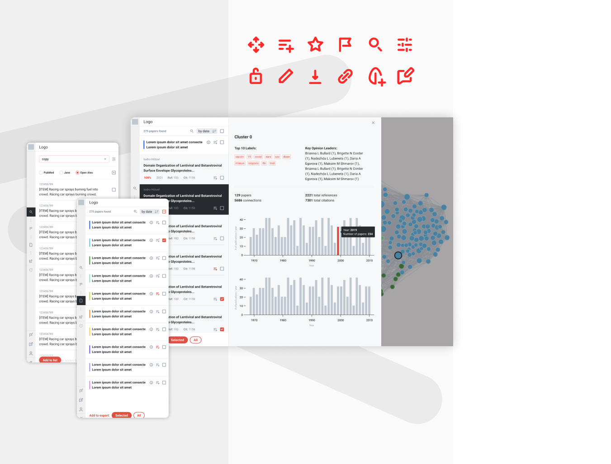

This scientific search engine—built around discovery, citation mapping, and paper similarity —helps researchers build bibliographies through cross-referencing while surfacing meaningful relationships between publications. The platform also supports clustering papers into thematic groups and identifying the most representative work within each cluster.
With several established competitors in the space, the challenge was to differentiate the experience without sacrificing the core functionality researchers rely on. Competitive analysis revealed a recurring issue across existing products: interfaces overloaded with information, often presenting secondary details before they were contextually relevant.
To create a more focused and intuitive experience, stacked drawers were introduced as a progressive disclosure pattern. This system breaks complex workflows into manageable layers, revealing information incrementally based on the user ’s current task and interaction flow.
A restrained color palette and custom iconography further reinforced the product’s clarity and usability, keeping attention on research workflows while maintaining a clean, highly functional interface.
